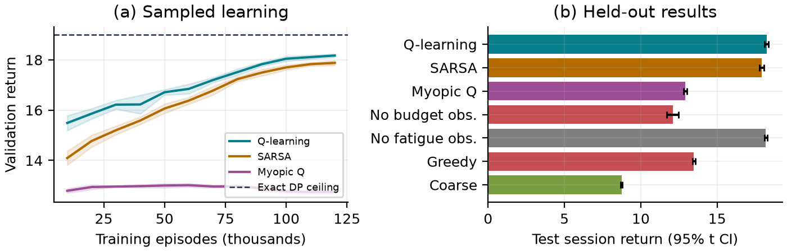

Explainable reinforcement learning / AI course project
PrivacyGuard
Choose what to share. Preserve the value of future choices.
Trained Q-learning agent · runs offline
Explore a request
Change a context to inspect the saved agent. No training happens in this demo.
Coarse data assumes an existing limited sharing permission. Sensitivity and consent probabilities are synthetic.
Evaluate in 3 minutes
- Change budget for the same request.
- Remove standing permission.
- Run a complete 12-request session.
- Compare measured results below.
Q values estimate future return. Visit counts help identify poorly explored contexts.
Learned recommendation
Loading saved agent…
Live session audit
0.00Accumulated return
0 / 10Exposure budget used
0Consent prompts
Start a session to see decisions and stochastic consent responses.
| Step | Request U / S | Choice | Outcome | Reward | Budget left |
|---|
Measured held-out results
| Policy | Session return ± 95% CI | Utility | Exposure | Prompts |
|---|
